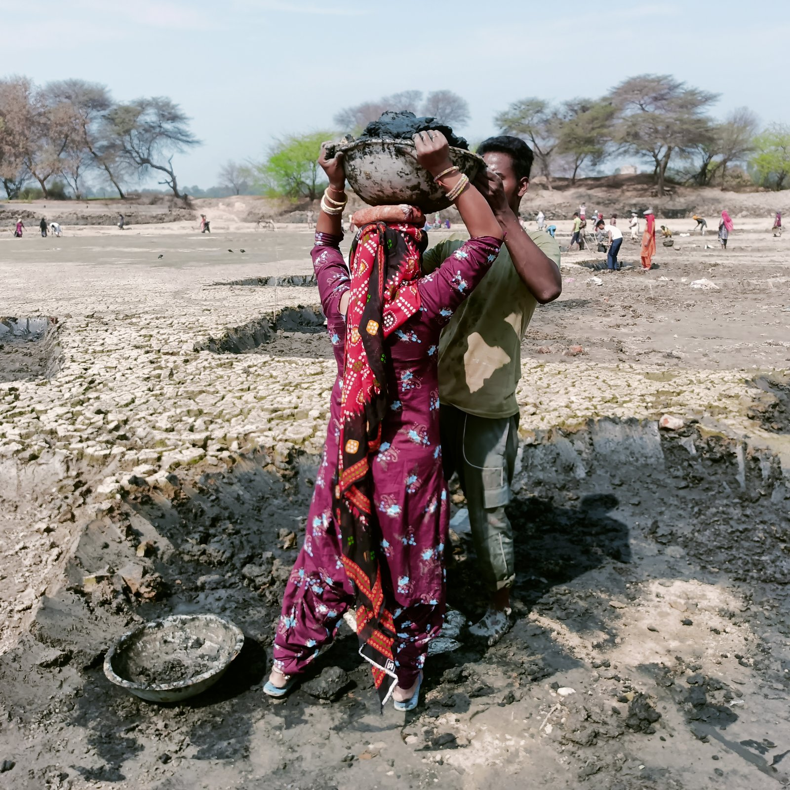

Poverty, Employment & Flagship Welfare Schemes
Comprehensive synthesis of poverty estimation methodologies from Dadabhai Naoroji to Tendulkar, Rangarajan, and NITI Aayog's MPI; forms of unemployment (disguised, structural, CWS/UPSS); and major flagship welfare initiatives like MGNREGA, PM-KISAN, Ayushman Bharat, and MUDRA.

Poverty Estimation Methodologies in India
From historical subsistence measures to multidimensional deprivation indices
| Committee / Expert Group | Year | Methodology & Poverty Basket | Poverty Line / Benchmark | Estimated Poverty % |
|---|---|---|---|---|
| Dadabhai Naoroji | 1867-68 | Jail Cost of Living (rice, dal, mutton, ghee, salt required for basic adult prisoner subsistence). | ₹16 to ₹35 / year | Pioneering historical estimate |
| Y.K. Alagh Task Force | 1979 | Nutritional Caloric Intake based on NSSO consumption expenditure. | 2,400 kcal (Rural) / 2,100 kcal (Urban) | ~50% (1977-78) |
| D.T. Lakdawala Committee | 1993 | Retained Alagh calorie norms; disaggregated across states using CPI-AL (Agricultural Labourers) and CPI-IW (Industrial Workers). | State-specific CPI basket updates | 36.0% (1993-94) |
| Suresh Tendulkar Committee | 2009 | Moved away from calorie anchors to Mixed Reference Period (MRP) expenditure across Health, Education, clothing, and food. | ₹816/mo (₹27/day) Rural ₹1,000/mo (₹33/day) Urban |
21.9% (2011-12) (Rural: 25.7%, Urban: 13.7%) |
| C. Rangarajan Committee | 2014 | Modified Mixed Reference Period (MMRP). Independent calorie, fat, protein, and non-food norms. | ₹972/mo (₹32/day) Rural ₹1,407/mo (₹47/day) Urban |
29.5% (2011-12) (Rural: 30.9%, Urban: 26.4%) |
NITI Aayog National Multidimensional Poverty Index (MPI)
Alkire-Foster MethodUnlike one-dimensional income/consumption lines, NITI Aayog's MPI assesses simultaneous deprivations across 3 equally-weighted dimensions (Health, Education, Standard of Living) spanning 12 indicators (Nutrition, Child-Adolescent Mortality, Maternal Health, Years of Schooling, School Attendance, Cooking Fuel, Sanitation, Drinking Water, Electricity, Housing, Assets, and Bank Accounts). According to NITI Aayog's 2024 report, India's multidimensional poverty plummeted from 29.17% in 2013-14 to 11.28% in 2022-23, lifting ~24.8 crore individuals out of multidimensional poverty.
Forms & Measurement Approaches of Unemployment
Structural classification and NSSO / MoSPI measurement indicators
More people are engaged in work than required. If excess workers are withdrawn, total output remains identical. Highly prevalent in Indian agriculture.
Arises from mismatch between skills supplied by the workforce and skills demanded by industries due to economic structural transformations.
Temporary voluntary unemployment while an individual is transitioning between jobs or entering the labor market in search of a better role.
Directly correlated with business cycle recessions; during economic slowdowns, aggregate demand contracts and companies lay off workforce.
NSO (NSSO) Measurement Approaches & PLFS
Reference Period: 365 Days. Measures chronic, long-term unemployment. A person is considered employed if engaged in an economic activity for a major part of the preceding 365 days (Principal) or subsidiary status (at least 30 days).
Reference Period: 7 Days. A person is considered unemployed if they did not work even for 1 hour on any day during the reference week, despite being available and seeking work.
Reference Period: Each Day of the Week. Records activity status for each half-day (4 hours) or full day (8 hours). Considered the most comprehensive and accurate measure of total unemployment.
Flagship Social Welfare & Empowerment Schemes
Major welfare initiatives examined repeatedly across Prelims and Mains
Statutory legal entitlement providing at least 100 days of guaranteed wage employment per financial year to every rural household whose adult members volunteer for unskilled manual work.
- Mandatory 1/3rd participation reserved for women.
- Unemployment allowance paid if work not provided within 15 days.
- Strict 60:40 wage to material expenditure ratio.
- Social Audits conducted by Gram Sabha.
Pradhan Mantri Kisan Samman Nidhi: Central sector scheme offering direct income support of ₹6,000 per year in 3 equal installments of ₹2,000 every 4 months directly into bank accounts of landholding farmer families.
- Originally for small/marginal farmers; later expanded to all farmers.
- Aadhaar-seeded Direct Benefit Transfer (DBT).
World's largest government-funded health assurance initiative launched in 2018. Provides ₹5 Lakh annual cover per family for secondary and tertiary care hospitalization to over 12 crore poor and vulnerable families (bottom 40% based on SECC 2011).
- Completely cashless and paperless access.
- Includes pre and post-hospitalization costs.
National Mission for Financial Inclusion providing universal access to banking facilities with zero minimum balance ("Basic Savings Bank Deposit Account" - BSBDA).
- RuPay Debit card with ₹2 Lakh inbuilt accident insurance.
- Overdraft facility of up to ₹10,000 for account holders.
- JAM Trinity backbone (Jan Dhan, Aadhaar, Mobile).
Micro Units Development & Refinance Agency providing collateral-free institutional credit to non-corporate, non-farm small/micro enterprises across 3 stages:
- Shishu: Loans up to ₹50,000.
- Kishore: Loans from ₹50,000 to ₹5,00,000.
- Tarun: Loans from ₹5,00,000 to ₹10,00,000 (raised to ₹20L in Budget 2024).
Executed by Ministry of Jal Shakti to provide Functional Household Tap Connection (FHTC) to every rural home, delivering 55 litres per capita per day (lpcd) of potable drinking water on a regular and long-term basis.
Income Inequality Measurement & Social Security Nets
Lorenz curve geometry, Gini coefficient dynamics, and micro-insurance programs
The Lorenz Curve & Gini Coefficient
Lorenz Curve: Developed by Max O. Lorenz (1905). A graphical representation of income or wealth distribution where the horizontal axis plots the cumulative percentage of population and the vertical axis plots the cumulative percentage of national income received.
Gini Coefficient: Formulated by Corrado Gini (1912). Measures the ratio of the area between the line of perfect equality (45-degree diagonal) and the Lorenz curve to the total area under the line of equality:
A Gini value of 0 represents perfect equality (everyone has identical income); a value of 1 denotes absolute inequality (one single individual possesses all national income).
Social Security Architecture
Active Recall Flashcards
Interactive 3D flip cards covering poverty committees, unemployment definitions, and welfare numbers
High-Yield Prelims Exam Simulator
Five standard multiple-choice questions on Tendulkar line, disguised unemployment, and welfare provisions